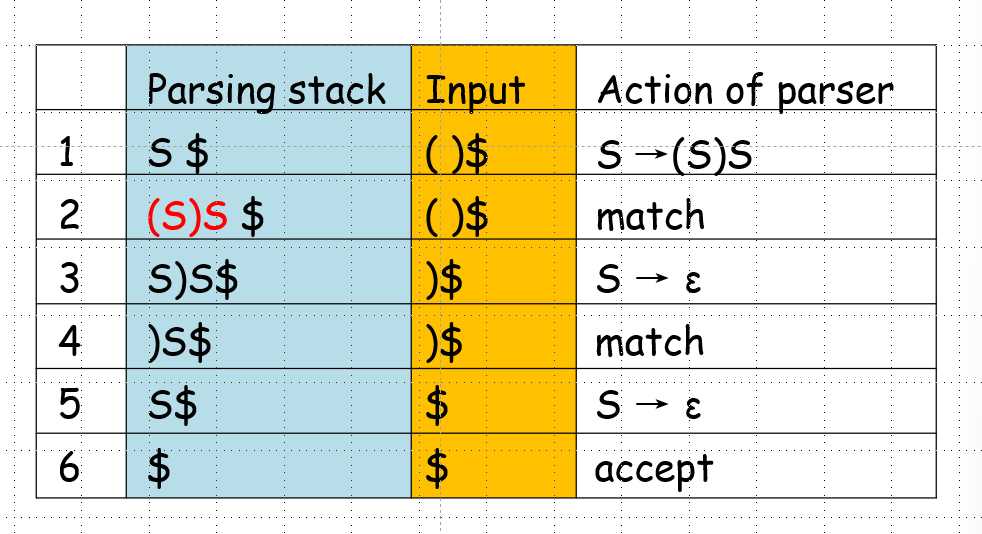
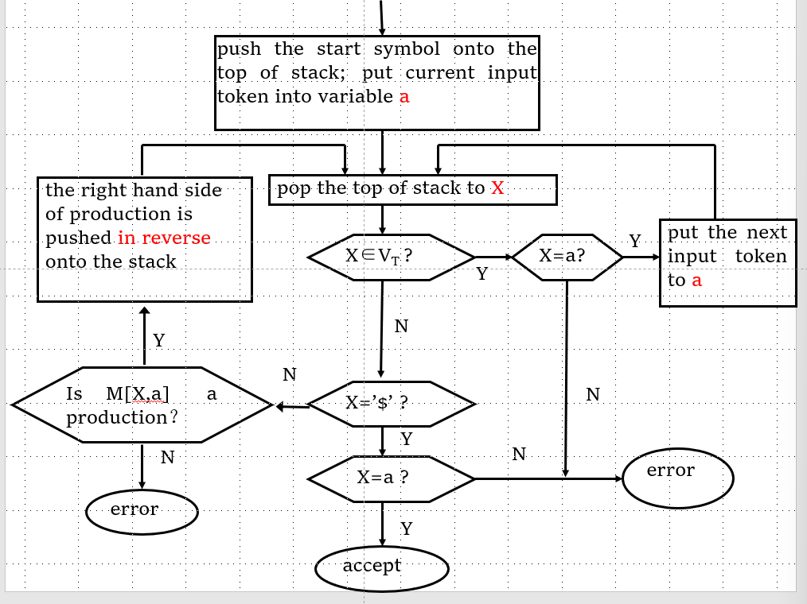

Top-Down Parsing:
从开始符号开始，尝试猜测要应用于最终用户程序的产生式。
Bottom-Up Parsing
从用户程序开始，尝试反向应用产生式，将程序转换回起始符号
# 1 what is the predictive parsing?
以剩余的输入为基础，猜测哪一个产生式被使用。利用 lookahead tokens 来预测下一个产生式。
predictive parsing 的条件：
- Top-Down Parsing，从文法的开始标记开始
- 可以根据现有的输入 token 决定一个具体的下一步的产生式，就可以预测
- predictive parsing 接受 LL（k）文法
# 2 LL(1) grammar
LL（1）：
- L：从左到右去 scan 输入
- L：最左推导
- 1：需要最多 1 个 look ahead token 来预测
如何判断一个文法是否为 LL（1）文法？
- 对于所有的相同左部的产生式当中，产生式的右部的 first set 不相交
- 对于所有的 first set 中包含 e 的非终止符 A，first（A）和 follow（A）的交集不相交
满足上面两个条件的为 LL（1）无关文法
验证 LL（1）无关文法时，只用会 A=>*e 的非终止符才需要求 Follow set 来验证
# 3 First set and Follow set
非常重要，判断一个文法是不是 LL（1）文法的基础！
First set：
- define：G=(VN, VT, P, S) is a grammar, b=(VN U VT)* ，FIRST(b) = { a ∊ VT | b => * a......} if b => * ε then ε ∊ FIRST(b)
讲人话就是 string b 的 first set 就是可以被 b 推导的排在第一个终止符的集合
计算 First（A）的算法！！！：
- 终止符的 first 集合是它本身
- for all A∈ VN ,if A => *ε, then First(A)={ε} else First(A)={ } ;
- For each production A→X1…Xj…Xn, First(A)=First(A) U SectionFirst(X1…Xj…Xn);
- 一直重复 3，直到 A 的 first 集合没有变化
SectionFirst(X1…Xj…Xn) = (First(X1)-{e})U(First(X2)-{e})U...U(First(Xj+1))
Xj+1 是第一个不是 nullable 的 symbol，即不能推导到 e
- if X1 is not nullable, then SectionFirst(X1…Xj…Xn) =First(X1)
- if X1 is nullable, then SectionFirst(X1…Xj…Xn) =First(X1) -{ε}, and continue to see X2. Stop untill is not nullable .
- if X1…Xn are all nullable, then SectionFirst(X1…Xn)= (First(X1) -{ε}) (First(X2)-{ε})U… U(First(Xn) -{ε}) ∪
Follow sets
- definition：G=(VT, VN, S,P) is a grammar，A∈VN ，FOLLOW(A)={a ∊ VT | S => *…Aa…}，if S => * …A, then $ ∊ FOLLOW(A)
直观上，非终结符 A 的跟随集合是该语法的所有句型中 A 之后的终结符（包括 $）的集合。
如何预测，如果当前输入存在于某个产生式右部的 first sets 中，选择这个产生式，存在于某个产生式左部的非终止符的 follow sets 中，选择这个产生式
Follow (A) 的算法
- S is the start symbol, Follow(S)={$};for all A∊VN, and A≠S,Follow(A)={ };
- For each production B→αAγ, for each A that is a nonterminal do
- Follow(A)=Follow(A)U(First(γ) -{ε})
- if ε ∈ First(γ) then add Follow(B) to Follow(A)
- 如果 A 位于产生式体的最后，add Follow (B) to Follow (A)
- Repeat 2,until there is no change to any follow set
# 4 Recursive-descent parsing 递归下降解析
从一个开始 symbol 的产生式开始，为每个非终结符 A 定义一个能够识别 A 的 procedures，A 语法规则的右侧指定了该过程的代码结构。terminals 表示匹配输入，nonterminals 表示调用其他的 procedures，choices 表示 alternatives (case or if statement) within the code
递归下降解析的过程：
- 先判断文法是否属于 LL（1）文法
- 判断是否存在左递归，消除左递归因子
- 计算 First Set 和 Follow Set
- 构建 Recursive-Descent Parser
- consists of a main procedure and a group of recursive procedures, each corresponds to a nonterminal of the grammar
- Sub procedures used :
- match is a procedure that matches the current next token with its parameter, advances the input if it succeeds, and declares error if it does not
- error is a procedure that prints an error message and exit
- Variable used:
- TOKEN is a variable that keeps the current next token in the input
1 | \\If productions of nonterminal U are |
编写 main 程序，为每个非终结符编写程序，为每个终结符编写 match 程序，编写 error 程序
3. 构建一颗语法树
# 5 LL(1)parsing
与递归下降分析中的递归调用函数不同，LL（1）parsing 使用一个 stack，储存 symbols 等待 match，最终 stack 和 input 同时 match 完，parsing 成功。

# 6 Parsing table
描述在适当的解析步骤中产生式的选择。是一个二维数组，M [N,t] 表示在 t 输入时选择 N 的产生式。
如何构建 Parsing tables：重复以下两个步骤对每一个非终止符
- For each token ‘a’ in First(α), add A→ α to the entry M[ A,a ]
- if ε is in First(α), for each element ‘a’ of Follow(A) (token or $), add A→α to M[ A,a ]
The LL(1) parsing algorithm
